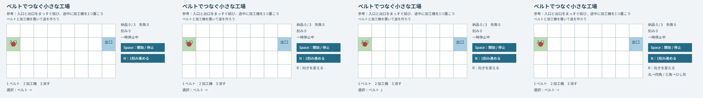
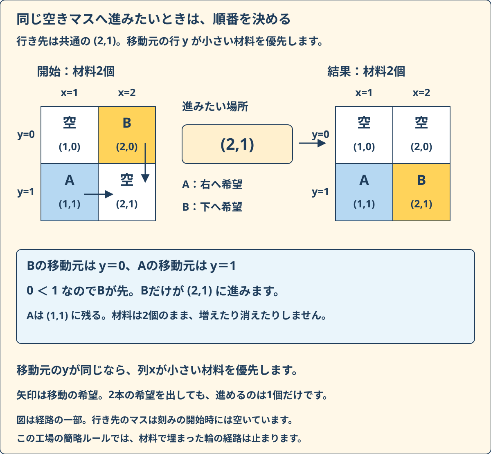

ベルトでつなぐ小さな工場の発展
道を作り、材料を加工して出口へ運びます。
始める前に
ZIPを展開してできたフォルダーでindex.htmlを開きます。基本編の完成版から始めます。ZIPには基本編の3ファイルが入っています。
WindowsでZIPを展開する（動画）
作業用フォルダーのscript.jsを編集します。各ステップで保存し、index.htmlを再読み込みしてください。
クラスはデータと処理の設計図です。constructorはnewで作るときに呼ばれ、thisは作られた一つ一つのインスタンスを指します。
ステップ 1：ベルトの向きを変える
このステップの見本を図で見る

このステップの見本
この行を足す前 変わったコードの一例（script.js）
if (event.key.toLowerCase() === "r" && !factory.running) factory.direction = (factory.direction + 1) % 4;
見本で確かめること
Rを押してから置くと矢印が変わります。
目標
上下左右に進める設備を配置します。
向きを変える操作を表示する
作業用フォルダーの script.js で、draw() の開始・停止と1刻みの表示の下に追加します。
目印
ctx.fillText("Space：開始 / 停止",562,224);ctx.fillText("N：1刻み進める",562,274);追加するコード
ctx.fillStyle="#233f52";ctx.fillText("R：向きを変える",550,318);Rで向きを変える操作を表示します。
停止中のRで向きを変える
作業用フォルダーの script.js で、keydown のプレイ中のSpaceの処理の下に追加します。
目印
if (event.code === "Space" && factory.state === "playing") { event.preventDefault(); toggle(); }追加するコード
if (event.key.toLowerCase() === "r" && !factory.running) factory.direction = (factory.direction + 1) % 4;停止中に向きを1増やします。% 4 は4で割った余りなので、0・1・2・3の後は0に戻ります。右・下・左・上の順です。

2つの材料が同じ空きマスを希望すると、移動元の行が小さいBを先に選びます。Aは元のマスに残るので、材料は2個のままです。
保存後の確認
保存してゲーム画面を更新する（動画）
index.html を再読み込みします。Rを押してから置くと矢印が変わります。 この段階の見本を開く
小さな練習
右向きからRを1回押すと何向きですか。
練習の答え
下向きです。
ステップ 2：2種類の材料を加工する
このステップの見本を図で見る
round → square
四角を出口へ運ぶ
triangle → diamond
ひし形を出口へ運ぶ
ゲーム画面とコードの前後を見る
このステップの見本
this.nextKind = "round"; this.round = 1; this.state = "playing"; this.message = "ベルトと加工機を置いて道を作ろう";
変わったコードの一例（script.js）this.nextKind = "triangle"; this.round = 1; this.state = "playing"; this.message = "ベルトと加工機を置いて道を作ろう";
見本で確かめること
加工機を通すと四角とひし形が順番に運ばれます。
目標
丸と三角を順番に作ります。
次に出す材料を三角から始める
作業用フォルダーの script.js で、constructor() の材料の種類を決める行を置き換えます。
置き換える範囲
this.nextKind = "round"; this.round = 1; this.state = "playing"; this.message = "ベルトと加工機を置いて道を作ろう";置き換えるコード
this.nextKind = "triangle"; this.round = 1; this.state = "playing"; this.message = "ベルトと加工機を置いて道を作ろう";初めに盤面にある材料は丸です。次に補充する材料は "triangle"（三角）からにします。
三角をひし形に加工する
作業用フォルダーの script.js で、tick() で丸を四角にする行の下に追加します。
目印
if (kind === "round") kind = "square";追加するコード
else if (kind === "triangle") kind = "diamond";加工機で丸なら四角、そうでなく三角なら "diamond"（ひし形）に変えます。
四角とひし形を納品する
作業用フォルダーの script.js で、tick() の出口で種類を調べる行を置き換えます。
置き換える範囲
if (kind === "square") this.delivered++; else this.discarded++;置き換えるコード
if (kind === "square" || kind === "diamond") this.delivered++; else this.discarded++;|| はどちらかです。四角またはひし形なら納品し、それ以外は失敗として数えます。
補充する種類を交互にする
作業用フォルダーの script.js で、tick() の入口に材料を補充する行の下に追加します。
目印
next.push({x:0,y:1,kind:this.nextKind});追加するコード
this.nextKind = this.nextKind === "round" ? "triangle" : "round";補充した後、次の種類を丸なら三角、それ以外なら丸に切り替えます。
加工後の形を案内する
作業用フォルダーの script.js で、draw() の向き変更の案内の下に追加します。
目印
ctx.fillStyle="#233f52";ctx.fillText("R：向きを変える",550,318);追加するコード
ctx.fillStyle="#233f52";ctx.fillText("丸→四角 / 三角→ひし形",550,348);丸と三角がそれぞれどの形に加工されるかを表示します。
保存後の確認
加工機を通すと四角とひし形が順番に運ばれます。 この段階の見本を開く
小さな練習
三角を加工すると何になりますか。
練習の答え
ひし形です。
ステップ 3：複数の納品目標を作る
このステップの見本を図で見る
target=[3,4,5][0]=3
課題達成。次へ進む案内
3 < [3,4,5][1]=4
あと1個
5 >= [3,4,5][2]=5
全課題クリア
ゲーム画面とコードの前後を見る
このステップの見本
const target = 3;
変わったコードの一例（script.js）const target = ([3,4,5][this.round-1]);
見本で確かめること
3個納品すると次の課題へ進む案内が出ます。
目標
3つの目標に続けて挑戦します。
課題ごとの目標を選ぶ
作業用フォルダーの script.js で、tick() の目標を決める行を置き換えます。
置き換える範囲
const target = 3;置き換えるコード
const target = ([3,4,5][this.round-1]);配列 [3,4,5] から課題番号より1小さい位置を選びます。課題1・2・3の目標はそれぞれ3・4・5個です。
目標達成後に次の課題か全クリアを選ぶ
作業用フォルダーの script.js で、tick() のクリア状態を設定する行を置き換えます。
置き換える範囲
this.state = "clear"; this.message = "クリア！ Spaceで最初から";置き換えるコード
if (this.round < 3) { this.state = "next"; this.message = "目標達成！ Enterで次の課題へ"; }
else { this.state = "clear"; this.message = "全課題クリア！ Spaceで最初から"; }課題1・2は "next" にしてEnterを案内し、課題3は "clear" にして全クリアにします。運転を止める行はそのままです。
次の課題へ進む処理を作る
作業用フォルダーの script.js で、tick() の目標達成の閉じ波括弧とメソッドの閉じ波括弧の下に追加します。
目印
else { this.state = "clear"; this.message = "全課題クリア！ Spaceで最初から"; }
}
}追加するコード
nextRound() {
if (this.state !== "next") return;
this.round++; this.delivered = 0; this.state = "playing"; this.message = "次の目標へ。Spaceで再開できます";
}次の課題を待つ状態だけ進めます。課題番号を1増やし、納品数を0に戻してプレイ中にします。設備と材料は残ります。
課題ごとの目標を画面に表示する
作業用フォルダーの script.js で、draw() の納品数と目標を表示する行を置き換えます。
置き換える範囲
ctx.fillText("納品 " + factory.delivered + " / " + 3 + " 失敗 " + factory.discarded, 550, 119);置き換えるコード
ctx.fillText("納品 " + factory.delivered + " / " + ([3,4,5][factory.round-1]) + " 失敗 " + factory.discarded, 550, 119);画面にも、現在の課題に対応した3・4・5個の目標を表示します。
Enterで次の課題へ進む
作業用フォルダーの script.js で、keydown のRで向きを変える行の下に追加します。
目印
if (event.key.toLowerCase() === "r" && !factory.running) factory.direction = (factory.direction + 1) % 4;追加するコード
if (event.key === "Enter") factory.nextRound();Enterで nextRound() を呼びます。メソッド内で "next" 以外を除くので、運転中に課題番号が進むことはありません。
保存後の確認
3個納品すると次の課題へ進む案内が出ます。 この段階の見本を開く
小さな練習
次の課題に進むと設備は消えますか。
練習の答え
消えず、そのまま残ります。